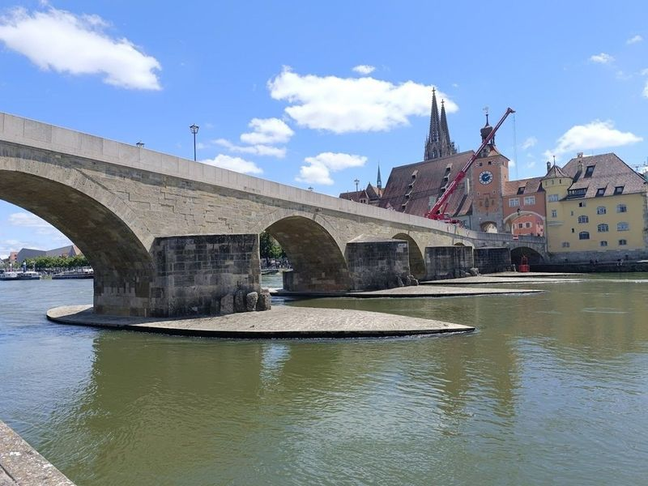
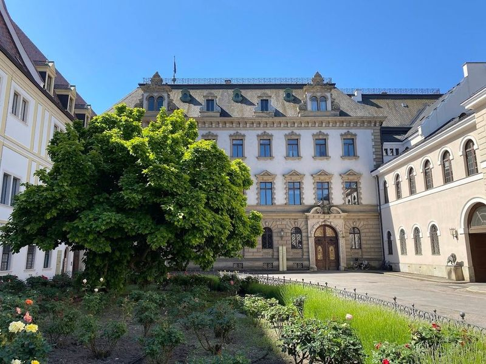
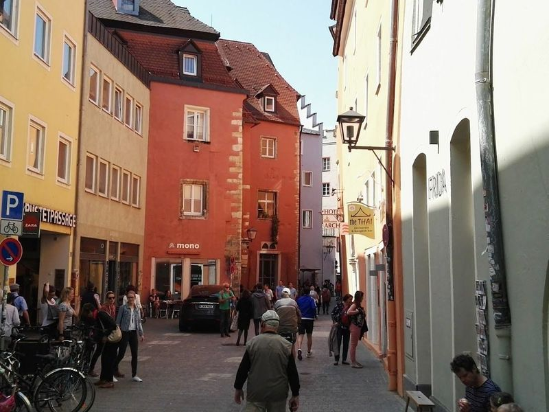
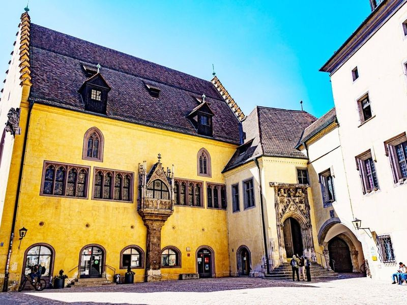
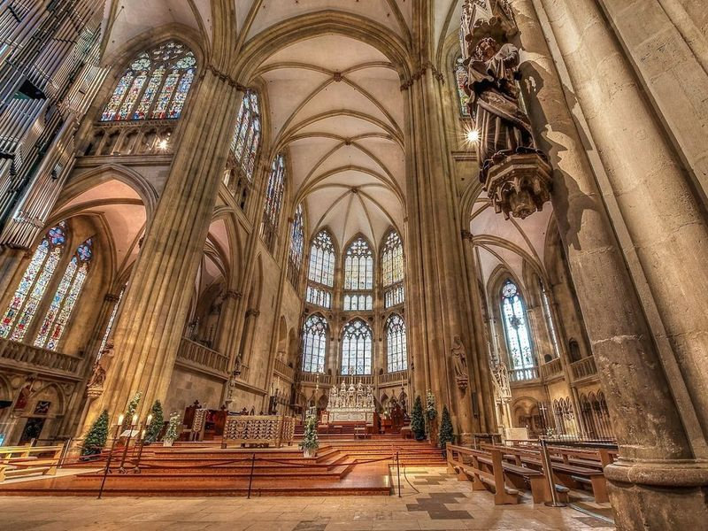
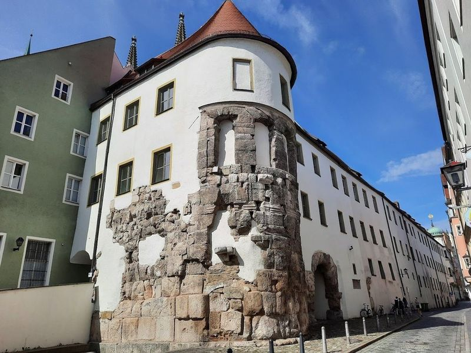
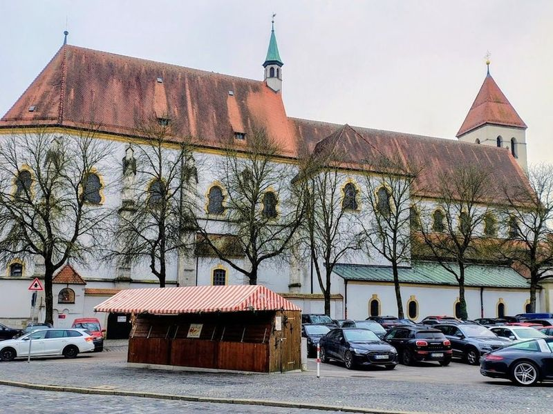
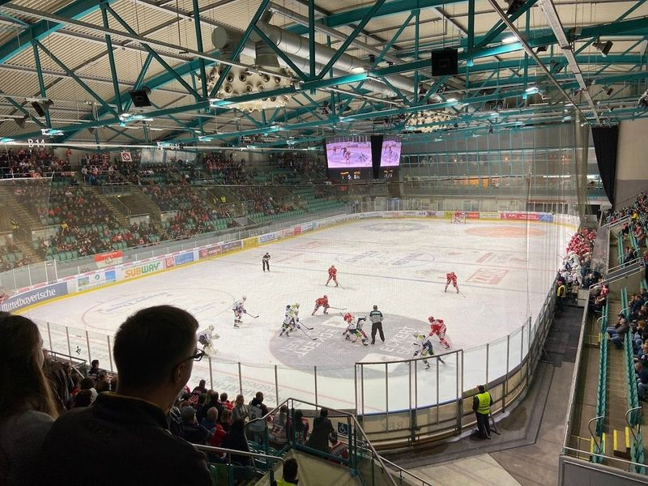
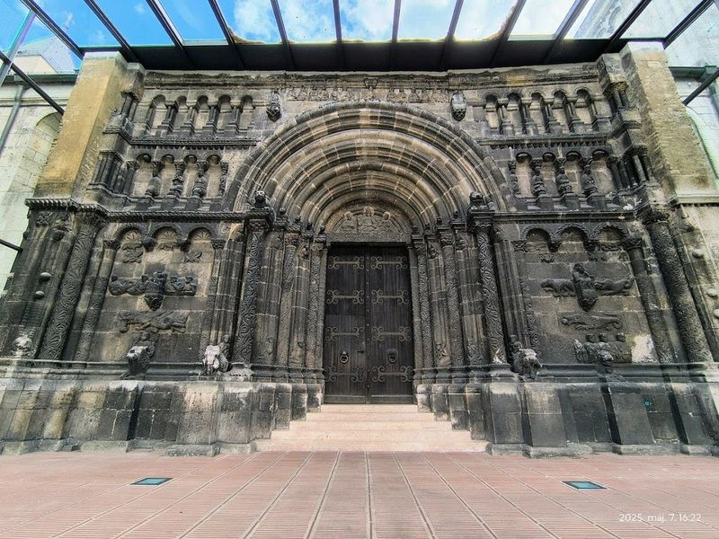
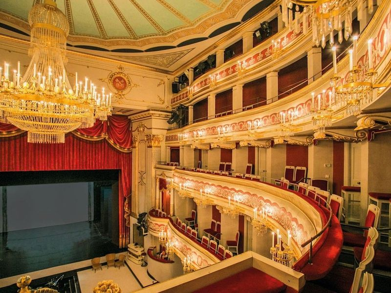

Explore Regensburg
A Brief History
Regensburg stands at the Danube's northernmost navigable point where Romans built Castra Regina and where medieval emperors held Reichstag assemblies in patrician palaces along the river. Stone bridge from the twelfth century and the cathedral's Gothic spires anchored trade between Italy and the North Sea. Largely spared heavy bombing, the city preserves one of Germany's densest ensembles of Roman, Romanesque, and baroque fabric as a Bavarian administrative centre.
Attractions Map
Top Sights & Activities

Steinerne Brücke
The Old Stone Bridge, also known as Steinerne Brucke, is a historic medieval bridge in Regensburg, Germany. Constructed in the 1100s in Romanesque style, it spans 300m over the Danube River with its impressive 16 arches. For over 800 years, it served as the city's sole river crossing and played a crucial role in trade and government activities.

Schloss St. Emmeram, Thurn und Taxis
Schloss St. Emmeram, Thurn und Taxis is a grand Rococo palace complex built on the site of a Benedictine monastery in Regensburg, Bavaria. This historic town, which was once the first capital of Bavaria and is now a UNESCO World Heritage site, boasts attractions like the Regensburg Cathedral, patrician towers, and stone bridge.

Haidplatz
Haidplatz is a picturesque triangular square In Regensburg's Old Town. This historic square has been witness to medieval jousting tournaments and is home to the impressive Golden Cross, an early Gothic castle with origins dating back to the 13th century. The area surrounding Haidplatz is easily walkable and offers accommodations in historic buildings, providing convenient access to major attractions such as St. Peter Cathedral.

Altes Rathaus Regensburg
The Altes Rathaus Regensburg, or the Old Town Hall, is a captivating blend of Gothic and Baroque architecture that stands as a testament to the city's rich history. Dating back to the early 14th century, this remarkable structure was once the heart of civic life in Regensburg and hosted significant events like the Imperial Diet of the Holy Roman Empire from 1663 to 1806.

St. Peter Cathedral
St. Peter Cathedral, a example of High Gothic architecture, stands proudly in the heart of Regensburg, dominating the skyline with its impressive bell towers. Originally constructed around 700 and later rebuilt in 1273 after a fire, this cathedral is not only an architectural marvel but also home to the renowned Regensburger Domspatzen choir.

Porta Praetoria
in the heart of Regensburg's Old Town, Porta Praetoria stands as a remarkable testament to ancient Roman engineering and history. Erected in 179 AD, this monumental gateway once served as the northern entrance to the Roman military camp known as Castra Regina. Constructed from robust limestone blocks, it not only highlights the architectural prowess of its time but also offers travellers an intriguing insight into Regensburg's rich heritage.

Basilica of the Nativity of Our Lady Regensburg
The Basilica of the Nativity of Our Lady Regensburg is an extremely old Catholic church located in Regensburg, Bavaria. The church has been in use for over a thousand years and is one of Bavaria's oldest places of worship. The site is catalogued as a cultural landmark.

Donau Arena
The Donau Arena is a large ice skating rink that is popular for hockey and ice skating. It was built in 1999 and replaced the old Eisstadion as Regensburg's home stadium for Ice Hockey. There are beginner and professional courses available to learn ice skating here, as well as skate rentals for those who want to practice on their own. The atmosphere at the Donau Arena is friendly and family-friendly, with good sightlines from most seats.

Scots Monastery
in the city of Regensburg, Germany, the Scots Monastery, or Schottenkloster, is a remarkable Benedictine abbey with roots tracing back to the 11th century. Founded by Irish monks, this historic site reflects a rich tapestry of religious and cultural significance throughout medieval times. The monastery's Romanesque church, dedicated to St.

Staatstheater Regensburg
The Theater Regensburg, established in 1804, serves as an important venue for operas, operettas, ballets, musicals, plays, and orchestral concerts. It also hosts open-air performances during the summer season. The theater's bar/cafe is inviting and provides a pleasant pre-show or intermission experience. While surtitles would have been beneficial during the performance of Der Freischutz, the staging, orchestra, and singing were exceptional.